Welcome to the Tiger Page
 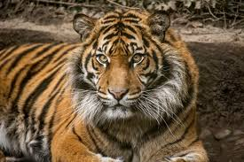
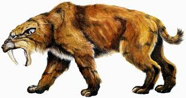
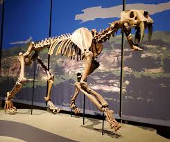
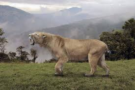
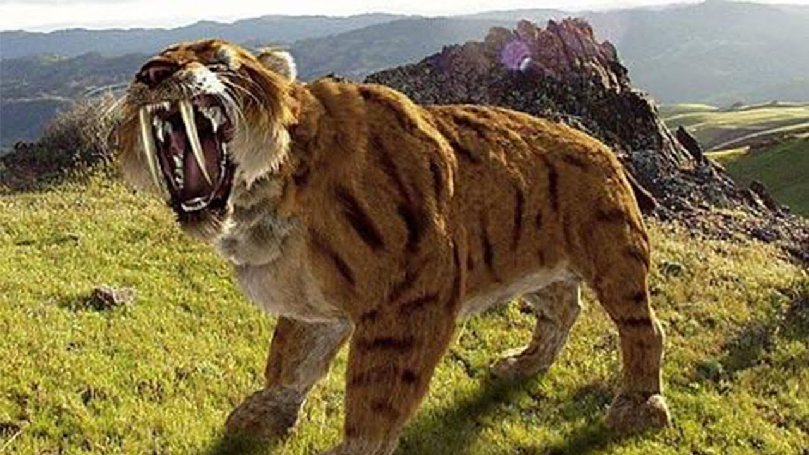
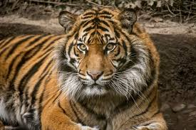
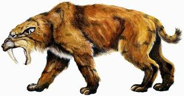
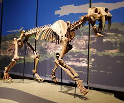
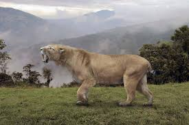
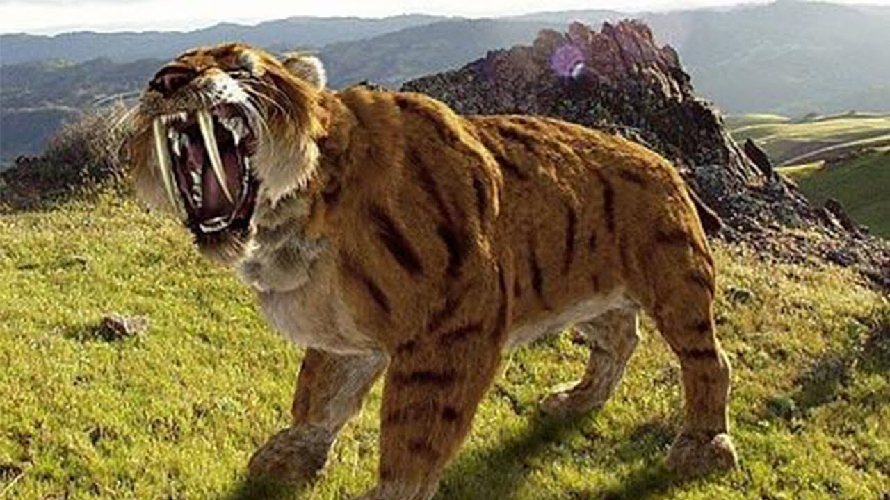
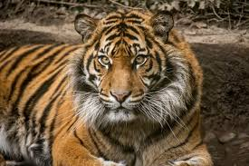
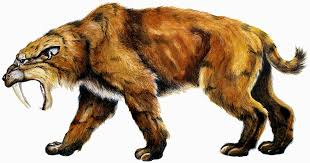
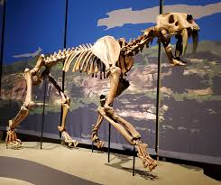
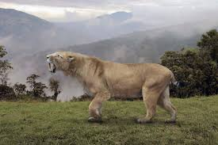
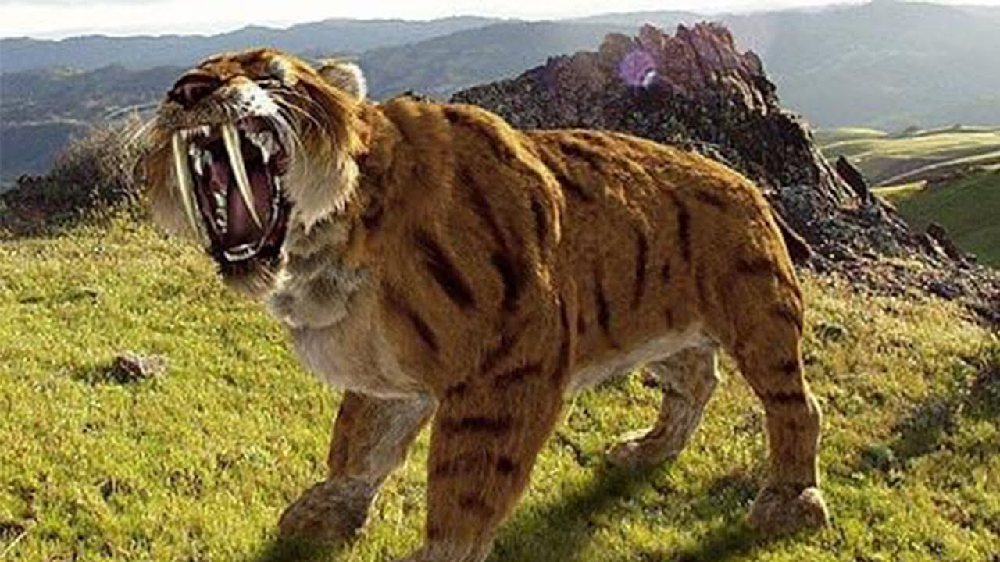
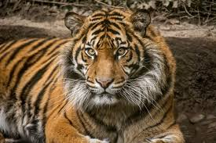
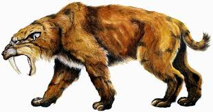
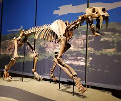
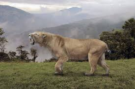
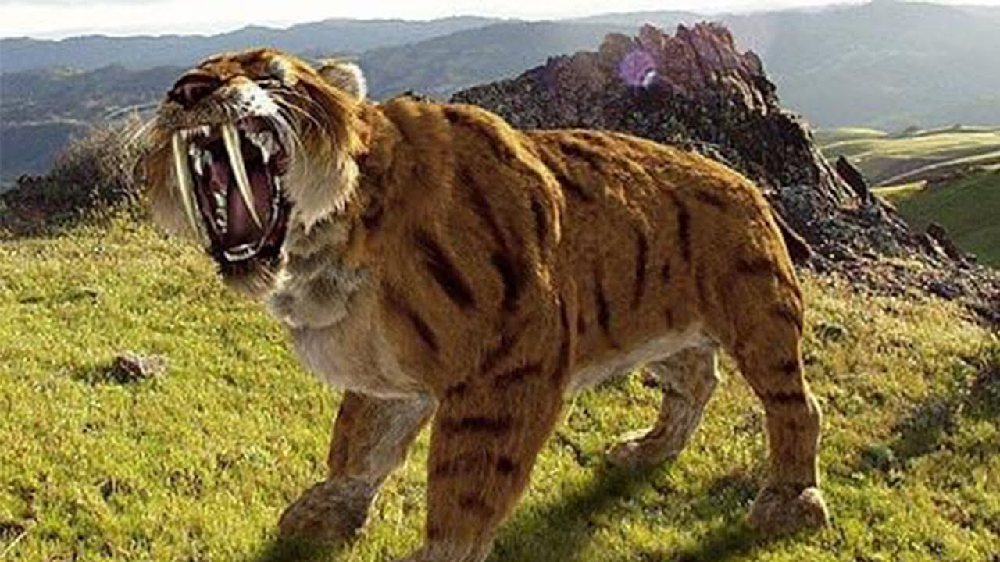
The ancient tiger, a magnificent predator and symbol of raw strength, roamed Earth’s landscapes thousands of years ago, leaving an indelible mark on the history of wildlife. Among the most renowned species of ancient tigers was the saber-toothed tiger, or Smilodon, which lived during the Ice Age and possessed long, curved canine teeth that were perfectly adapted for hunting large prey. Fossil evidence reveals that Smilodon was larger and more muscular than modern tigers, with a robust build that allowed it to tackle formidable creatures like mammoths and giant ground sloths. These predators relied on stealth, power, and their iconic saber-like teeth to bring down prey, showcasing an evolutionary marvel of the prehistoric world.
Ancient tigers were not only formidable hunters but also keystone species, playing a critical role in maintaining the ecological balance of their habitats. By preying on herbivores, they controlled population sizes and prevented overgrazing, which helped sustain vegetation and supported other species within the ecosystem. These big cats adapted to a wide range of environments, from the cold, icy plains of the Ice Age to temperate forests and grasslands. Their ability to thrive in diverse regions demonstrated their resilience and versatility. Studying these ancient tigers provides valuable insights into how apex predators shaped their ecosystems and how their decline or extinction could dramatically alter the balance of nature.
The decline of ancient tigers like Smilodon was driven by a combination of factors, including climate change and competition with early humans. As the Ice Age ended and global temperatures rose, their habitats and prey availability shifted drastically, forcing these predators to adapt or perish. Human activity compounded these challenges, as early humans hunted similar prey and competed for resources. The combination of environmental changes and human pressures eventually led to the extinction of species like the saber-toothed tiger, highlighting the vulnerability of even the most powerful creatures in the face of rapid ecological shifts and human encroachment.
Despite their extinction, ancient tigers continue to captivate scientists and the public alike. Fossil discoveries and advanced technologies have allowed researchers to reconstruct their physical characteristics, hunting behaviors, and ecological roles. These findings shed light on the evolutionary journey of modern big cats, including Bengal tigers, Siberian tigers, and other species that still roam the Earth today. By understanding the adaptations and challenges faced by their prehistoric relatives, we can better appreciate the resilience and adaptability of today’s tigers while recognizing the ongoing threats they face in their natural habitats.
The story of the ancient tiger serves as a powerful reminder of nature’s fragility and the impact of environmental and human-driven changes on wildlife. Modern tigers, descendants of these ancient predators, are now facing similar challenges, including habitat loss, poaching, and climate change. Conservation efforts inspired by the lessons of the past aim to protect these majestic creatures and ensure their survival for generations to come. The ancient tiger’s legacy lives on, urging humanity to honor its role as a guardian of biodiversity and to preserve the delicate balance of life on Earth.